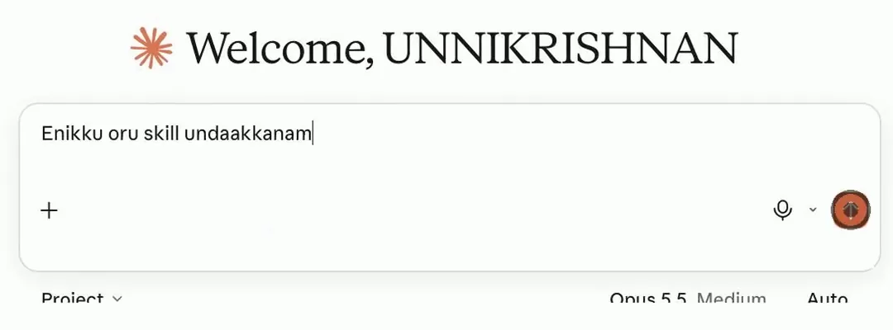
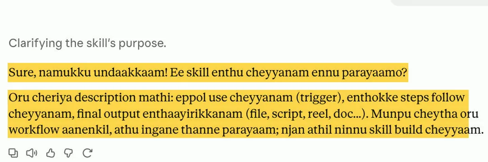
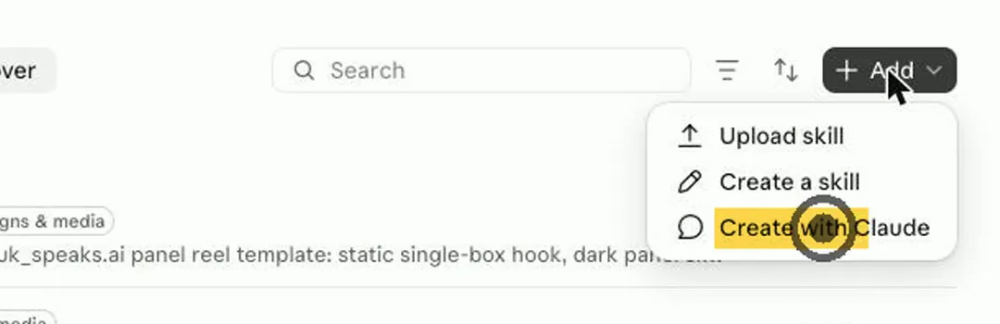
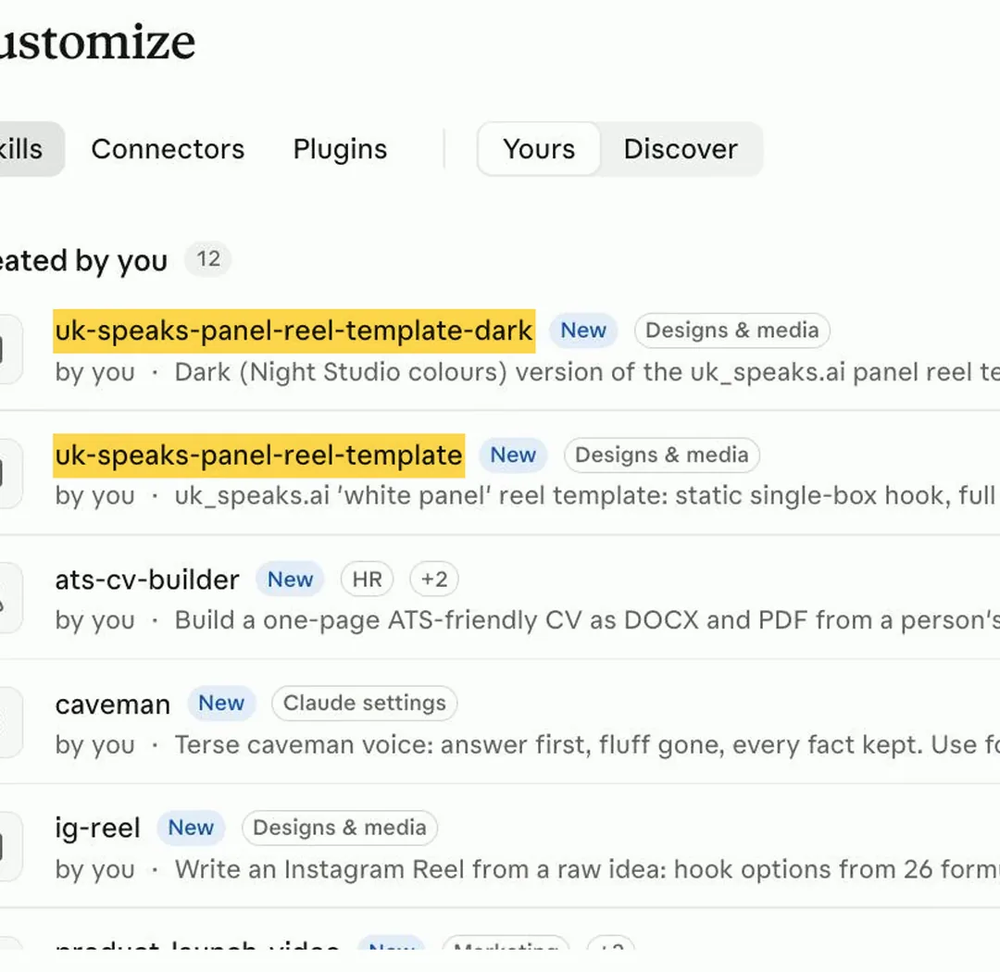

What are skills in Claude? Write once. Use every time.
Becoming a Claude Master · Episode 1. A skill is a note of instructions you give Claude once. Claude reads it when that job comes up. You never explain the same thing twice.
The short version
- Turn on file creationSettings › Capabilities. One switch.
- Ask Claude to make a skillExplain your process, upload one example, answer its questions.
- Save it and turn it onCustomize › Skills. Claude uses it on its own from then on.
How it works
- Turn on file creationone switch in Settings
- Ask Claude for a skillcopy Prompt 1 below
- Answer its questionsand upload one example
- Save it and turn it onCustomize › Skills
- Done!Claude follows your way every time
What’s a prompt? It’s the message you type to the AI. Tap Copy on the black box and paste it.
What a skill is
A skill is a paper of instructions
Think of a note you give a new assistant: my style, my steps 1-2-3, one example. In Claude, that note is a file called SKILL.md.
- A name, like weekly-client-update.
- A description: one line that tells Claude when to use it.
- The instructions: your steps, your rules, your examples.
Claude first reads only the name and description. It opens the full instructions only when your request needs them. So you can keep many skills on.
3 types of skillsbuilt-in, from apps, your own
- Built-in. Made by Anthropic for Excel, Word, PowerPoint and PDF files.
- From apps. Apps like Notion, Figma, Canva and Atlassian have skills in Claude's skills directory.
- Your own. Your process, your style. This is the best part, and it's what the rest of this guide is about.
Make your own skill
Step 1: Turn on file creation
Open Claude (app or claude.ai). Go to Settings › Capabilities and turn on Code execution and file creation. In some versions it's called Create and edit files. Skills need this switch.
Skills work on the Free plan too, not just paid plans.
Step 2: Just ask Claude
No coding. Start a new chat and say you want a skill. You can type it in Manglish, like I did: “Enikku oru skill undaakkanam.” Or copy the prompt below and fill in the last line.

Prompt 1
I want to create a Claude skill. Ask me questions one at a time until you clearly understand: 1. What job this skill is for 2. When you should use it 3. My steps, in order 4. My style rules 5. What the final output should look like I will upload one example of my past work. Don't add rules I didn't give you. When you have everything, show me the skill's name, description and instructions so I can approve them before you create it. The job: [for example: writing my weekly update to clients]
Step 3: Explain, upload, answer
Tell Claude how you do the job, in your own words. Upload one good example. Claude will ask questions: when to use it, the steps, and the result you want. Answer honestly.
The final decision is yours. Read what Claude writes and change anything that isn't how you work.

Step 4: Claude makes the skill
Claude writes the skill for you. You can also start from the skills page: go to Customize › Skills, tap + Add and choose Create with Claude.

Step 5: Save it and turn it on
Save the skill, then check it's switched ON in Customize › Skills. That's it.
Next time that job comes up, Claude uses the skill on its own. If you want to be sure, name it in your message: “Use my client update skill.”
Example
Every time: “Edit this reel. Hook on top. Zoom cuts. No branding…” and I still had to fix the style again and again.
I taught Claude my reel style once, as a skill. My reels are edited with it now. Same style, every time.

Tips that make a skill work
- The description matters most. Say exactly when to use it. If Claude doesn't pick the skill up, make the description more specific.
- One skill, one job. Make two small skills instead of one big one.
- Test it. Try 2–3 different requests that should use it, and check the result.
- Keep private things out. No passwords or personal data inside a skill.
Want to go deeper?official guides from Anthropic
Official guides from Anthropic, the company that makes Claude. They're in English.
- What are skills? The short explainer from Claude's help centre.
- Use skills in Claude. How to turn skills on, plans, and settings.
- How to create custom skills. What goes inside a skill, and tips for the description.
- The complete guide to building skills for Claude. Anthropic's long guide, for when you want every detail.
- Claude Skills. Anthropic's skills page.
Source
Checked on 7 November 2026 against Claude's help pages: Use skills in Claude and How to create custom skills, and Anthropic's skills directory announcement. Menu names can change as Claude updates its app.